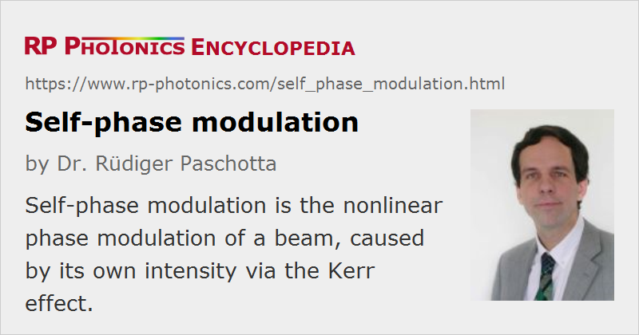

Self-phase Modulation
Acronym: SPM
Definition: nonlinear phase modulation of a beam, caused by its own intensity via the Kerr effect
More general term: nonlinear optical effects
Opposite term: cross-phase modulation
German: Selbstphasenmodulation
Categories: fiber optics and waveguides, nonlinear optics
How to cite the article; suggest additional literature
Author: Dr. Rüdiger Paschotta
Due to the Kerr effect, high optical intensity in a medium (e.g. an optical fiber) causes a nonlinear phase delay which has the same temporal shape as the optical intensity. This can be described as a nonlinear change in the refractive index:
with the nonlinear index n2 and the optical intensity I. In the context of self-phase modulation, the emphasis is on the temporal dependence of the phase shift, whereas the transverse dependence for some beam profile leads to the phenomenon of self-focusing.
Effects on Optical Pulses
If an optical pulse is transmitted through a medium, the Kerr effect causes a time-dependent phase shift according to the time-dependent pulse intensity. In this way, an initial unchirped optical pulse acquires a so-called chirp, i.e., a temporally varying instantaneous frequency.
For a Gaussian beam with beam radius w in a medium with length L, the phase change per unit optical power is described by the proportionality constant
(In some cases, it may be more convenient to omit the factor L, obtaining the phase change per unit optical power and unit length.) Note that two times smaller coefficients sometimes occur in the literature, if an incorrect equation for the peak intensity of a Gaussian beam is used.
The time-dependent phase change caused by SPM is associated with a modification of the optical spectrum. If the pulse is initially unchirped or up-chirped, SPM leads to spectral broadening (an increase in optical bandwidth), whereas spectral compression can result if the initial pulse is downchirped (always assuming a positive nonlinear index). For strong SPM, the optical spectrum can exhibit strong oscillations (see Figure 2). The reason for the oscillatory character is essentially that the instantaneous frequency undergoes strong excursions, so that in general there are contributions from two different times to the Fourier integral for a given frequency component. Depending on the exact frequency, these contributions may constructively add up or cancel each other (see also Ref. [7]).
In optical fibers, SPM can be the dominant effect on an ultrashort pulse if the peak power is high (leading to strong SPM) while the chromatic dispersion is weak, so that the pulse duration remains approximately constant. Figure 3 shows an example case where that assumption is well fulfilled within the first 30 mm of fiber; here, the overall spectral width rises about linearly with the propagation distance. Thereafter, it grows faster because anomalous dispersion leads to pulse compression and thus to an enhanced nonlinear interaction.
In optical fibers with anomalous chromatic dispersion, the chirp from self-phase modulation may be compensated by dispersion; this can lead to the formation of solitons. In the case of fundamental solitons in a lossless fiber, the spectral width of the pulses stays constant during propagation, despite the SPM effect.
Self-phase Modulation in Semiconductors via Carrier Density Changes
The term self-phase modulation is occasionally used outside the context of the Kerr effect, when other effects cause intensity-dependent phase changes. In particular, this is the case in semiconductor lasers and semiconductor optical amplifiers, where a high signal intensity can reduce the carrier densities, which in turn lead to a modification of the refractive index and thus the phase change per unit length during propagation. Comparing this effect with SPM via the Kerr effect, there is an important difference: such carrier-related phase changes do not simply follow the temporal intensity profile, because the carrier densities do not instantly adjust to modified intensities. This effect is pronounced for pulse durations below the relaxation time of the carriers, which is typically in the range of picoseconds to a few nanoseconds.
Self-phase Modulation in Mode-locked Lasers
Self-phase modulation has important effects in mode-locked femtosecond lasers. It results mainly from the Kerr nonlinearity of the gain medium, although for very long laser resonators even the Kerr nonlinearity of air can be relevant [5]. Without dispersion, the nonlinear phase shifts can be so strong that stable operation is no longer possible. In that case, soliton mode locking [4] is a good solution, where a balance of self-phase modulation and dispersion is utilized, similar to the situation of solitons in fibers.
Self-phase Modulation via Cascaded Nonlinearities
Strong self-phase modulation can also arise from cascaded χ(2) nonlinearities. Basically this means that a not phase-matched nonlinear interaction leads to frequency doubling, but with subsequent backconversion. In effect, there is little power conversion to other wavelengths, but the phase changes on the original wave can be substantial. This effect may also be used to compensate self-phase modulation from other origins [6].
Questions and Comments from Users
Here you can submit questions and comments. As far as they get accepted by the author, they will appear above this paragraph together with the author’s answer. The author will decide on acceptance based on certain criteria. Essentially, the issue must be of sufficiently broad interest.
Please do not enter personal data here; we would otherwise delete it soon. (See also our privacy declaration.) If you wish to receive personal feedback or consultancy from the author, please contact him e.g. via e-mail.
By submitting the information, you give your consent to the potential publication of your inputs on our website according to our rules. (If you later retract your consent, we will delete those inputs.) As your inputs are first reviewed by the author, they may be published with some delay.
Bibliography
| [1] | F. Shimizu, “Frequency broadening in liquids by a short light pulse”, Phys. Rev. Lett. 19 (19), 1097 (1967), doi:10.1103/PhysRevLett.19.1097 (first demonstration of self-phase modulation) |
| [2] | R. R. Alfano and S. L. Shapiro, “Observation of self-phase modulation and small-scale filaments in crystals and glasses”, Phys. Rev. Lett. 24 (11), 592 (1970), doi:10.1103/PhysRevLett.24.592 |
| [3] | R. H. Stolen and C. Lin, “Self-phase-modulation in silica optical fibers”, Phys. Rev. A 17 (4), 1448 (1978), doi:10.1103/PhysRevA.17.1448 |
| [4] | F. X. Kärtner et al., “Stabilization of solitonlike pulses with a slow saturable absorber”, Opt. Lett. 20 (1), 16 (1995), doi:10.1364/OL.20.000016 |
| [5] | S. V. Marchese et al., “Pulse energy scaling to 5 μJ from a femtosecond thin-disk laser”, Opt. Lett. 31 (18), 2728 (2006), doi:10.1364/OL.31.002728 |
| [6] | F. Saltarelli et al., “Self-phase modulation cancellation in a high-power ultrafast thin-disk laser oscillator”, Optica 5 (12), 1603 (2018), doi:10.1364/OPTICA.5.001603 |
| [7] | R. Paschotta, "Effect of self-phase modulation on the pulse bandwidth" |
| [8] | R. Paschotta, tutorial on "Passive Fiber Optics", Part 11: Nonlinearities of Fibers |
See also: Kerr effect, Kerr lens, solitons, cross-phase modulation, self-focusing, mode locking, The Photonics Spotlight 2015-07-01
and other articles in the categories fiber optics and waveguides, nonlinear optics
|  |
If you like this page, please share the link with your friends and colleagues, e.g. via social media:
These sharing buttons are implemented in a privacy-friendly way!